Design overview
Klik layar untuk membuka PNG ukuran penuh. File Figma dibuat dengan plugin
di plugin/manifest.json; spesifikasi lengkap ada di
design-spec.md.
Tamu & Autentikasi
3 layar


Pasien
11 layar
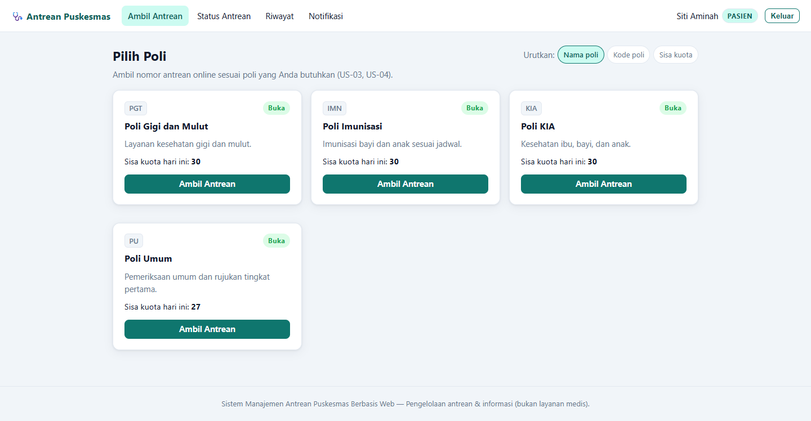
Pilih Poli
GET /pasien/poliPoli aktif, status buka/tutup, sisa kuota, ambil antrean.

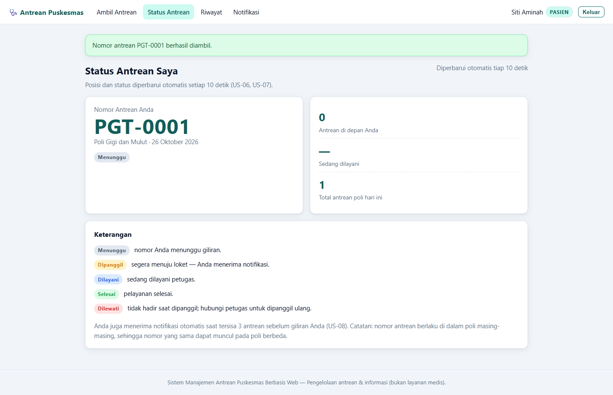
Status — Menunggu
GET /pasien/statusNomor, sisa antrean di depan, sedang dilayani, total.

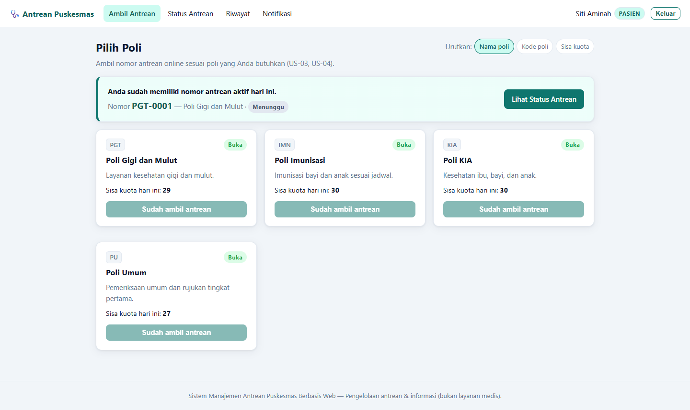
Pilih Poli — Antrean Aktif
GET /pasien/poliBanner sorot, tombol poli dinonaktifkan.

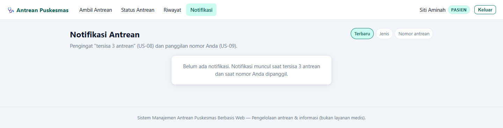
Notifikasi — Kosong
GET /pasien/notifikasiEmpty state dengan penjelasan notifikasi.

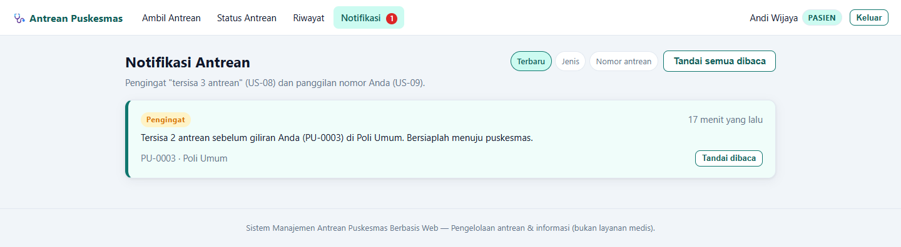
Notifikasi — Pengingat
GET /pasien/notifikasiPengingat sisa 3 antrean + tandai dibaca.

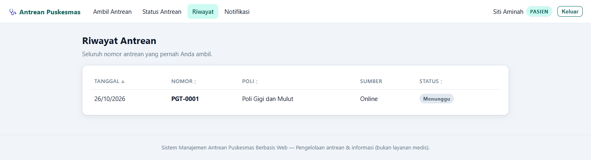
Riwayat Antrean
GET /pasien/riwayatRiwayat lengkap dengan status dan sumber.

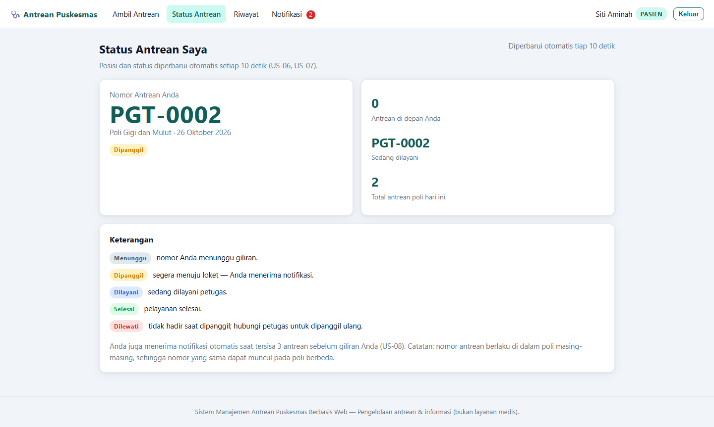
Status — Dipanggil
GET /pasien/statusNomor dipanggil dan penanda loket.

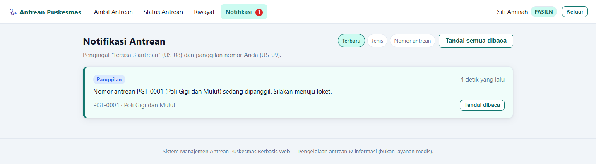
Notifikasi — Panggilan
GET /pasien/notifikasiNotifikasi panggilan, badge belum dibaca.

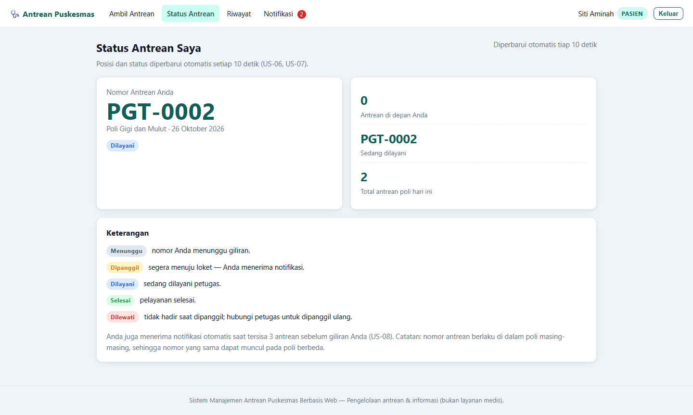
Status — Dilayani
GET /pasien/statusStatus saat petugas mulai melayani.

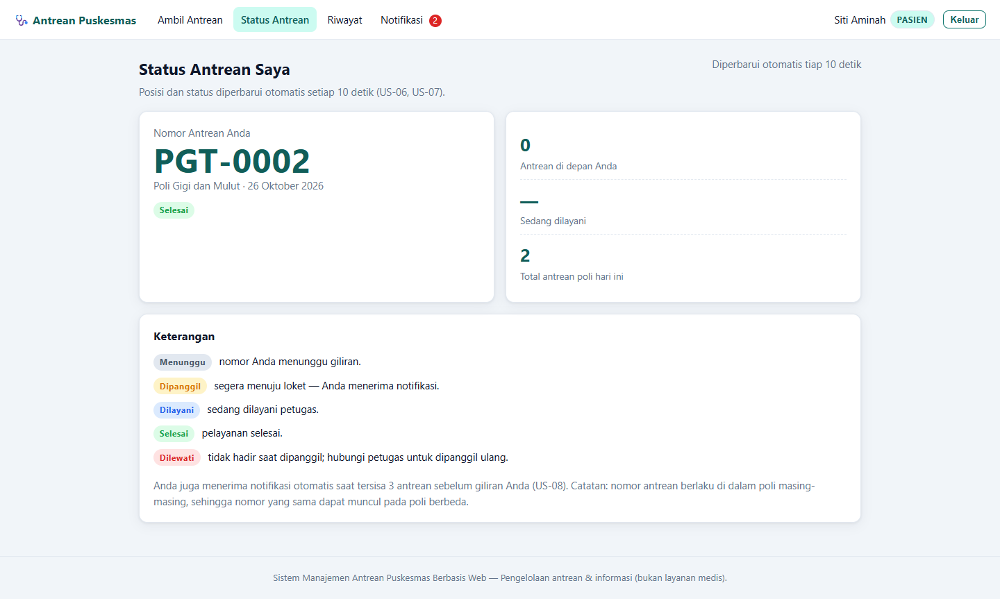
Status — Selesai
GET /pasien/statusStatus akhir setelah pelayanan.

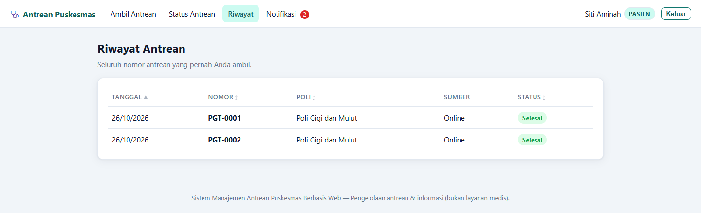
Riwayat — Selesai
GET /pasien/riwayatEntri terbaru berstatus selesai.
Petugas
5 layar
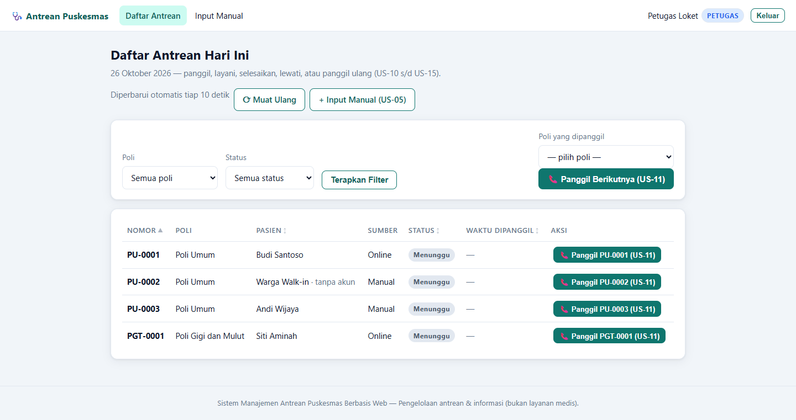
Daftar Antrean Hari Ini
GET /petugas/antreanFilter poli/status, panggil berikutnya, aksi baris.

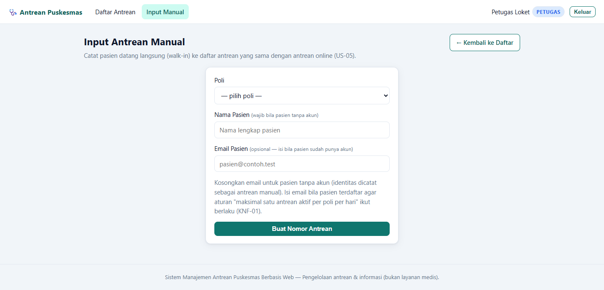
Input Antrean Manual
GET /petugas/antrean/manualWalk-in tanpa akun atau dengan email terdaftar.

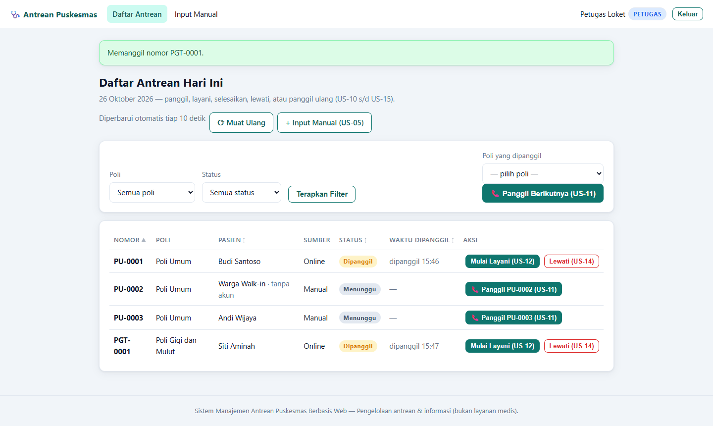
Daftar — Dipanggil
GET /petugas/antreanAksi Mulai Layani dan Lewati.

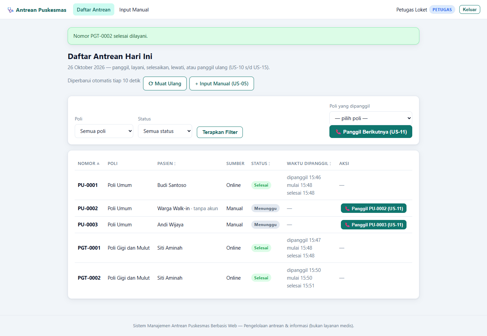
Daftar — Selesai
GET /petugas/antreanStempel waktu panggil, mulai, selesai.

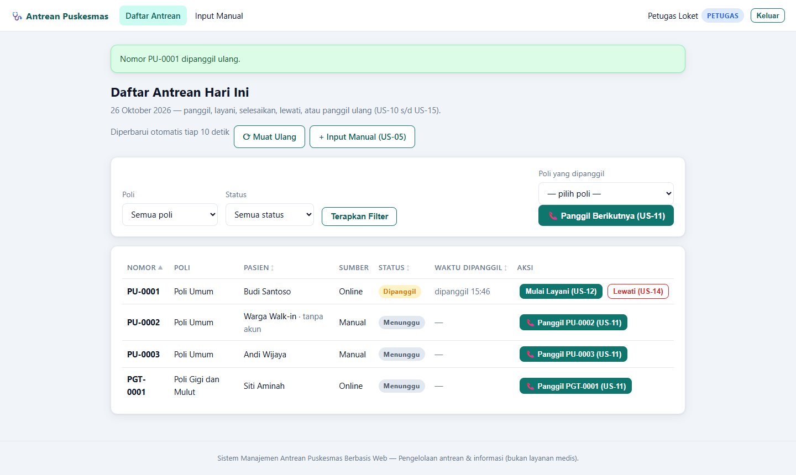
Lewati & Panggil Ulang
GET /petugas/antreanCabang DIPANGGIL → DILEWATI → DIPANGGIL.
Admin
4 layar
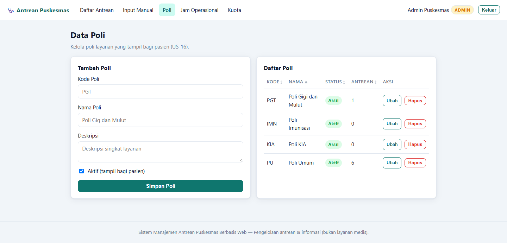
Data Poli
GET /admin/poliTambah poli dan tabel data poli.

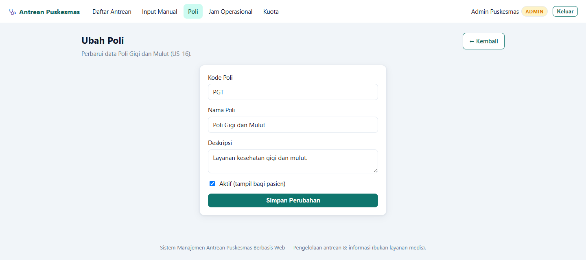
Ubah Poli
GET /admin/poli/{id}/ubahEdit kode, nama, deskripsi, status aktif.

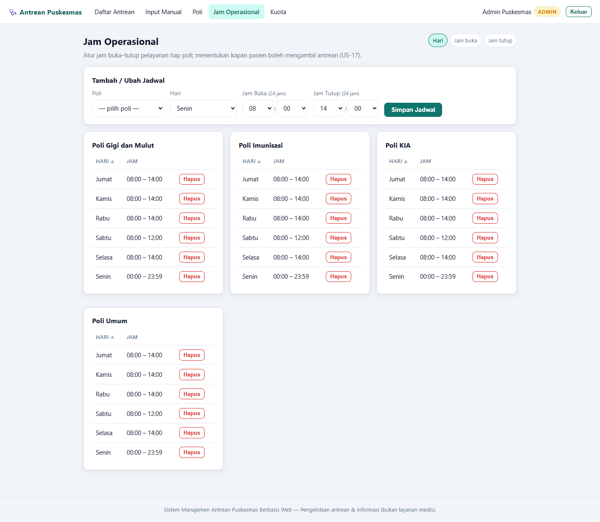
Jam Operasional
GET /admin/jamJam buka–tutup per poli, pemilih 24 jam.

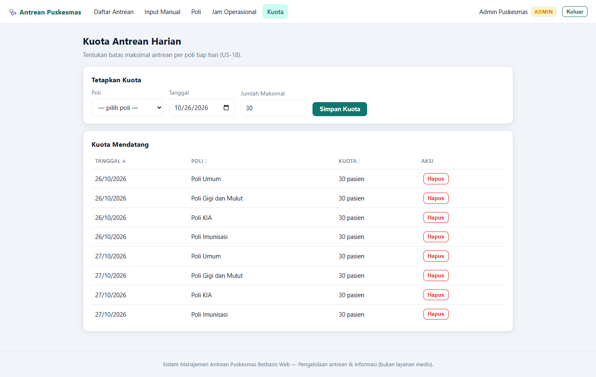
Kuota Antrean Harian
GET /admin/kuotaKuota per poli/tanggal dan daftar mendatang.
Mobile
3 layar


Verified flow
Pasien
Pilih Poli → Status Menunggu → Notifikasi pengingat → Dipanggil → Notifikasi panggilan → Dilayani → Selesai → Riwayat
Petugas
Daftar Antrean → Panggil → Mulai Layani → Selesai
↘ Lewati → Dilewati → Panggil Ulang → Dipanggil
Input Manual (walk-in) → Daftar Antrean
Admin
Data Poli → Jam Operasional → Kuota Harian (dan Ubah Poli)